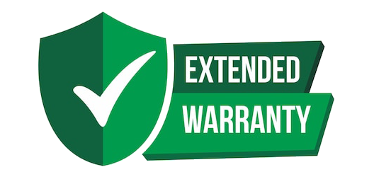

Windhoek AutoDeals launched on (date). We are a trusted motoring marketplace and a
complete digital business bringing together buyers and sellers across all vehicle types.
We will continue to offer world-class leading solutions for buyers and sellers of vehicles. As
always we have exciting product diversification. We use state-of-the-art technology to
bring motor vehicle buyers and sellers together. We have created tools for dealers to track
online performance.
Vehicle Check was another example of our commitment to transparency in the car buying
process and allows car shoppers to check a cars history before buying.
Get a free
valuation in
seconds.
We’ll come
to you.
No haggling,
Instant
payment.
F.A.Q's
How does the process of selling my car works?
Selling a used car can be an overwhelming process. There are so many steps involved and it’s easy to get lost along the way.
You can't just post an ad online and hope that some buyer will come knocking on your door.
There's a lot more that goes into car sales than meets the eye - luckily, we have put together this guide on how to sell a car privately in which we'll help you answer the following topics:
• Where do I want to sell my car?
• Do I have to deregister my car beforehand?
• 9 steps to prepare and sell your used car
• 8 Things to watch out for when selling a used car
Follow our step-by-step guide. We give you all of the information that you need in order to successfully sell your car quickly and efficiently.
What are the different options for selling my car?
As everyone who’s ever tried knows from experience, finding a simple way to sell a used car for a good price can be a stressful and time-consuming task.
It can also be really tricky to make comparisons between the best ways to sell. Ultimately, the best place for you to sell your car will depend on your priorities.
Do you want a quick and easy sale with an instant buying website or a professional dealer? Or do you have time to find a private buyer? These are the kind of things you’ll need to think about, as there’s many different types of buyer.
Here at Motorway, we think we offer the best way – you can sell your car and get a great offer from someone you can trust. You can find your best offer from a nationwide network of 5,000+ verified dealers, and sell with free home collection and fast payment, but it’s not the only way. In this guide, we explore 5 ways to find your perfect buyer…
How can I increase the value of my car?
1. Clean it
First impressions matter. The cleaner and shinier your car, the more money you’ll get for it. An expert at car valuation firm Glass’s said: “The better your car looks, the easier it’ll be for a dealer to imagine it sitting on their forecourt. If you invest £50 or £100 in a professional valet, you’ll make twice or possibly three times that back because of the increased amount it will be worth in the buyer’s eyes.”
2. Have any minor dings or dents repaired
Anyone looking at buying a second-hand car, particularly a dealer, will see any damage and immediately start working out how much it’s going to cost them to repair it. They will then start deducting money from the amount they might have been willing to pay for the car. Car valuation service CAP said: “If you’re selling a car for £2000 it’s probably not worth spending £100 on SMART (Small and Medium Area Repair Technology) repairs. If you’re selling it for £8-9000 it definitely is worthwhile. I think more often than not, SMART repairs will pay for themselves.”
3. Get the paperwork in order
When you sell a used car, serious buyers will want to know how it’s been looked after during its lifetime. To this end make sure you’ve got the service book and ensure that garages fill it in, even if the car is no longer maintained by a franchised dealer. Also keep all accompanying invoices for work carried out, as well as old MOT certificates.
4. Have it serviced
For the buyer, taking a used car to the garage for a service can be a voyage into the unknown. Removing that uncertainty by having a service and MOT done before selling your car, if they’re due soon, can help you make more money.
5. Find anything that came with the car
Remember that parcel shelf you took out and stashed in the garage the last time you went to the tip? Find it. An expert at Glass’s said: “Anyone who knows what they are talking about will want parts that came with the car such as the parcel shelf, tool kit or spare wheel. Find the spare key, too. By including all these items with your car, you’re taking away reasons for them not to buy your car. Without them, a dealer will just keep chipping away at you, lowering the price.”
6. Pimp it up – properly
We’re not talking about some go-faster stripes and an air freshener. If you want to increase the value of your car, as well as its appearance, do it properly. Buy original equipment parts, such as alloy wheels rather than cheap aftermarket items, and people are more likely to pay a higher price for your car
Does mileage affect the value of my car?
Just as selling a house requires a spot of spring cleaning, it pays to prepare an old car to make it as appealing as possible to potential buyers. We’ve turned to leading used car experts and asked for their six tips on getting the most money when selling a used car privately or to a dealer.
When it comes to value loss, a car’s age and condition are not the only contributing factors. The number of miles on the odometer also has a significant effect on how much a car is worth on the second-hand market.
A car that loses value due to high mileage may simultaneously experience value loss through age-related depreciation and general wear and tear. Many second-hand buyers are also wary of high-mileage vehicles, sometimes due to concerns that they are more prone to developing faults. As such, cars with higher mileages are also unlikely to be selected as approved used cars.
Value your car in under 30 seconds
GO
Why does mileage affect car value?
A car with a high mileage will always be worth less than an identical vehicle with fewer miles on the clock. This is because the further a car travels, the greater the wear on its components - and the more likely it is they will require repairs or replacement.
High-mileage cars are also more likely to have amassed superficial and structural damage, which would further devalue them. This may explain why many second-hand buyers prefer cars with a low or average mileage
How can I get a free online car valuation?
Just click our Value a Car Link and we will update you to the best of:
ACCIDENT, SALVAGE AND THEFT RECORDS*
Our data is provided by state-level agencies and trusted car industry partners to help you discover if a vehicle has reported accident, salvage and/or theft records, where available.
TITLES, LIENS AND SALES RECORDS
Bumper reports may include liens, sales listing history, title registrations and over 50 title brand checks to help you make the right decisions when purchasing a vehicle.
SUGGESTED MAINTENANCE AND UPCOMING REPAIRS
With Bumper, see the likelihood and estimated costs of repairs needed on your vehicle**.
SPECS, RECALLS, WARRANTIES AND INSTALLED OPTIONS
Bumper can help you simplify things when comparing two similar vehicles with our cost data on installed options, 150+ data points of vehicle specs and recalls.
MARKET VALUE
Get estimated market values for used and new cars based on millions of historical vehicle sales.
**The repairs are based on the mileage of the vehicle and include any potentially expected repairs over the next 12 months.
What paperwork do I need to sell my car?
The inventory shortage has boosted used-car values, which means selling your car now might bring in more money than you’d expect. Assuming you already have a plan for replacing your vehicle, the extra cash from the sale can go a long way. When preparing to sell in the current landscape, time is of the essence — especially if you have your eye on a new car. Make sure you’re ready to hand over the keys when a good offer presents itself by gathering essential documents like the car’s title and bill of sale.
Related: How to Transfer Ownership When You Sell Your Car
There are also some additional items that aren’t required for selling a car but can increase the vehicle’s value in the eyes of a buyer: a vehicle history report, maintenance records and extended warranty details. Getting all your docs in a row prior to listing the car or heading to the dealership translates to a faster sale (and potentially more cash in your pocket).
Car Title
The most important document you’ll need when selling a vehicle is the title; trying to sell a car without one can pose a challenge. The title serves as legal proof of ownership and includes details like the car’s make, model, year and vehicle identification number. Selling a vehicle privately without proof of ownership is illegal in many states, plus you could be held liable for any traffic and toll violations incurred by the new owner. If you’re missing the title, you’ll want to find it or get it replaced prior to the sale.
If you still owe money on the vehicle, the lienholder is likely listed on the title and may physically hold the title until the loan is paid off. If you’re trading in your car, the dealership can handle the details of paying the lender and obtaining the title. Selling privately without a title in hand involves more steps: You’ll need to get the payoff amount from the lender and determine the protocols for the transaction.
Bill of Sale
Some states also require the seller to present a bill of sale to the buyer. A bill of sale typically includes information like the car’s VIN, a detailed description of the car, the date of the sale and the purchase price; it should be signed by both parties when the car is sold. Unlike the title transfer, a bill of sale doesn’t legally transfer vehicle ownership. Instead, it outlines the conditions of the sale and serves as a receipt for the buyer and a waiver of liability for the seller. Even if a bill of sale is not required in your state, it’s smart to complete one. Templates are available to download on most states’ DMV websites.
The Extras
When selling a vehicle privately, presenting some additional documents can give the buyer more confidence, help the car sell faster and potentially increase its value. These items include a vehicle history report, maintenance records and any transferable warranties.
A vehicle history report uses the car’s VIN to pull information like the number of past owners, total miles and any previous accident or repair history. Sharing the vehicle’s maintenance records with the buyer shows that you were diligent with routine maintenance and repairs, giving them insight into the car’s reliability. Don’t worry if you didn’t save all your maintenance receipts, you can contact your service department and ask them to share the records with you.
Finally, if the vehicle is still under the manufacturer’s warranty, the remaining warranty coverage can be transferred to the new owner, bringing reassurance and added value to the sale. While a factory warranty is tied to a vehicle’s VIN and should automatically transfer to the new owner, transferring a third-party extended warranty involves more steps — and sometimes a fee. Gather your warranty details, including contact information for the warranty company, then inquire about the steps to transfer it when you’re ready to sell the car.
Proof of Sale
After you successfully sell your vehicle, there may be one more document to complete in order to waive all liability: Some states require that you report the vehicle sale to the DMV within a specified number of days.
Can I sell my car if I still own finance on it?
Given the cost of cars, it’s unsurprising that the vast majority of new cars, and a significant proportion of second-hand vehicles, are obtained using some form of finance package.
But while finance deals like Personal Contract Purchase are a convenient way of putting a new car on your driveway, one key aspect to these packages is that while you will be the registered keeper of the car, you will not technically own it – it will remain the property of the finance company for the duration of your contract.
But what are the implications of this if you want to sell the car? This guide will answer that question.
Sell your car with carwow
Can I sell a financed car?
No, in essence. As the car does not legally belong to you, it is not yours to sell, and it is illegal to knowingly do so. If you attempt to sell a car you do not own you could be prosecuted for fraud, risking a prison sentence in the process.
If you want to sell a car that is subject to any form of finance such as a PCP contract or a Hire Purchase agreement, it is vital that you settle (IE pay off) the monies owed in order to legally possess the car, and therefore gain the right to sell it.
There are four main car financing options, each of which we will cover in this guide.
• Personal contract purchase (PCP)
• Hire purchase (HP)
• Personal contract hire (PCH)
• Personal loan (such as from a bank).
Why should I use Auto Deals to sell my car?
So, what are the pros of dealing with us?
The pros of selling your car to us as a dealer is that we are authentics, and proffessional with expertise in then business of buying and selling cars. This means that you won’t have to explain all the nitty-gritties to a dealer that you might have to when negotiating with a private buyer.
Dealers will manage the paperwork
Dealers are geared up to manage the paperwork transactions that make selling a car so time-consuming. They will tell you the exact procedures to follow when it comes to settling any outstanding finance contracts pertaining to the car, the NATIS documents that need to be filled in regarding change of ownership, and whether or not you need to have your car taken for a roadworthy test prior to sale (in the case of a sale to a dealership, they will take care of this in 99 cases out of 100, because that’s what they do, day-in, day out).
You won’t have to advertise your car for sale
Advertising your car for sale as a private individual can put you at risk to crooks, because you have no really effective way of vetting who you are dealing with. Dealerships have a reputation to uphold, so that they can stay in business. So selling your car to a dealer with an established business is generally risk-free.
The transaction with a dealer will save you time
One of the biggest benefit to you, by selling your car to a dealer, is that you won’t have to spend time setting up viewing appointments.
You will receive payment for your car immediately
Dealerships have access to instant finance, so once you have agreed a price with a dealer, delivered the car and processed the paperwork, the money will be paid into your bank account straight away.
The cons of selling to a dealer
The biggest negative when it comes to selling your car to a dealer is that you will generally realise a lower price than you would if you were to sell the car privately.
A dealer is not buying your car for sentimental reasons, or for personal use. The idea for the dealer is to buy low and sell high. The dealer takes the risk of buying your car when it may not be easy to sell-on at a profit. For this reason, he may have to invest extra money in any repairs that are necessary. So, for all these reasons, a dealer will not offer you a price as high as that which you could achieve by selling your car yourself.
How to achieve the best price from a dealer
There is a saying that the easiest person to sell something to is another salesman. So when selling your car to a dealer, realise that you, too are a salesman.
*Research the car’s current retail value by logging onto AutoTrader and checking what similar models are selling for. Many dealers use only AutoTrader to get an idea of what a car’s current value is, because AutoTrader has such a wide reach in the South African market.
*Present your car properly by taking it for a professional valet before you show it to a dealer. Experts agree that any money you spend on a valet will be recouped in the selling price
*Repair any obvious faults on the car. Visual (bodywork) faults are the most important, as they constitute first impressions (which, as we have all been told by our mothers, or grandmothers, are lasting impressions)
*Take it to at least three dealerships before agreeing on a sale, so that you ensure you are at least being offered a reasonable “trade” price.
Our Partners
Autocash
Complete a guaranteed offer valuation by simply inserting parameters of your vehicle in the comfort of your home
and get a guaranteed offer of up to 45% of your vehicles value. Complete and sign legal documentation
with one of our representatives. Get Instant cash into your bank account within 45 minutes.
cash@whkauto.com
Windhoek Automotive
Windhoek Automotive Repairs & Performance is a registered Namibian close corporation
which provides quality vehicle repair services ranging from Diagnostics, scheduled services
to full engine overhauls and other complex repairs. Services range from engine,
gearbox, suspensions, electrical, brake and clutch works.
fix@whkauto.com
Shisha Shine Carwash
A quick stop at Shisha Shine will get your car clean and beaming again.
We are in the business of beauty and class, offering
the best car wash experience. Need more than a wash, visit Shisha Shine Car Wash.
carwash@whkauto.com
Finance
Insurance - King Price Doe

Extended Warranty Plans
do you have any questions? feel free to contact us!